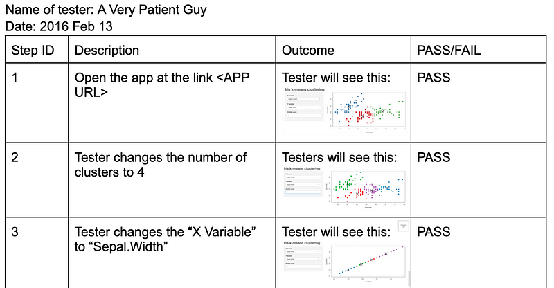
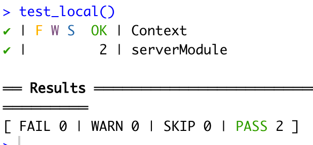
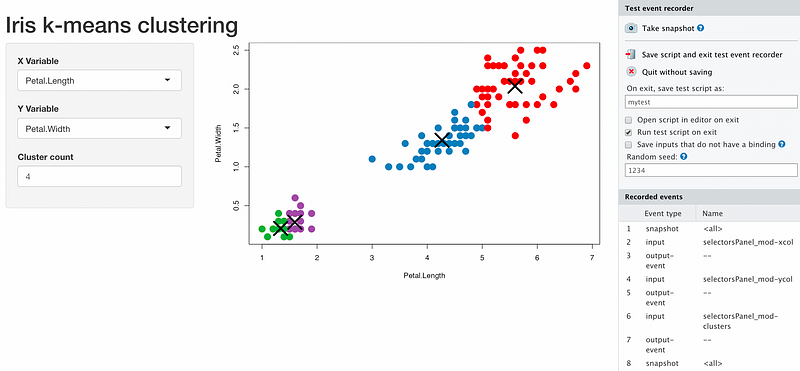
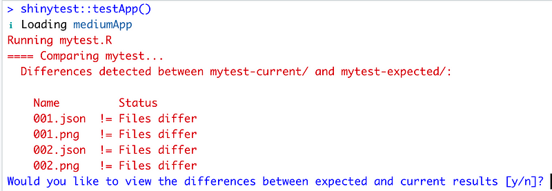
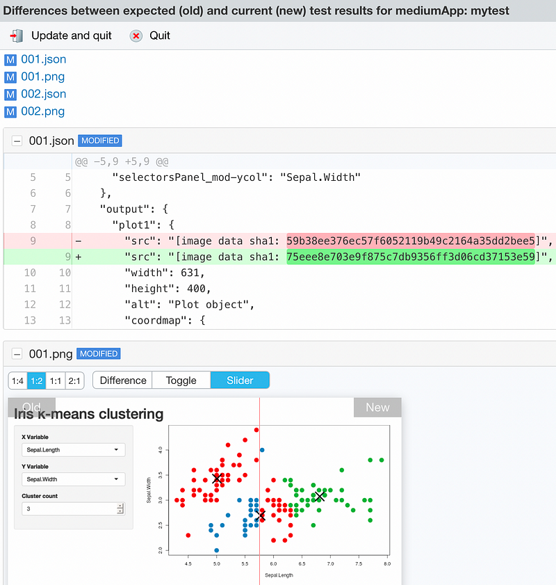
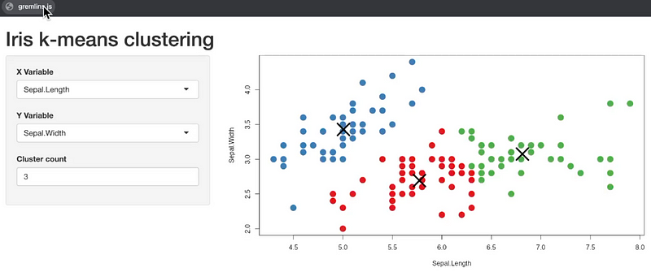
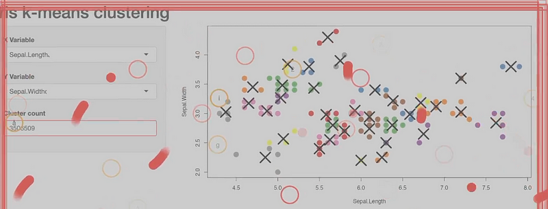
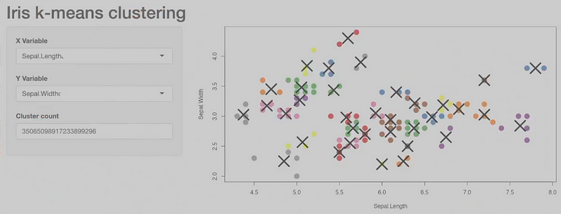
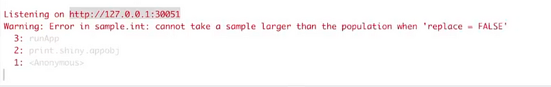
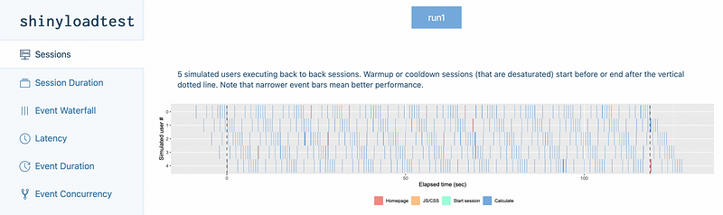

mod_selectorsPanel_server <- function(id){
moduleServer( id, function(input, output, session){
rV <- reactiveValues(selectedData = NULL,
clusters = NULL)
ns <- session$ns
# update the required datasets whenever one of inputs changes.
observeEvent(list(input$xcol, input$ycol, input$clusters),{
# make sure that the selectors have been intialized and
# are not NULL
req(input$clusters)
req(input$ycol)
req(input$xcol)
rV$selectedData <- iris[, c(input$xcol, input$ycol)]
rV$clusters <- kmeans(rV$selectedData, input$clusters)
return(rV)
}) Before you continue reading, make sure you are familiar with part 1 and part 2.
Before you continue reading, make sure you are familiar with part 1 and part 2.
Testing Shiny apps is hard. Or at least, it is very different than testing “traditional” R code. For the longest time we could not use any automated test. The only option was to write and execute manual test scripts. “Manual test script” is a fancy name for a word document with a very, very long table. This table detailed each test step step and the expected outcome. The tester was manually executing the script and marking the column “PASS” or “FAIL”.

The chances of discovering an application failure were almost the same as the chances to discover a “script error”. Scipt errors include incomplete or inaccurate description of what the tester should see.
Luckily, things have evolved. Now, we can run automated testing on Shiny apps.
We can identify five types of Shiny testing:
- Unit testing
- Server logic testing
- Regression testing
- Stability testing
- Load testing
As we move from one kind of test to the next, tests become more complex and cover a larger part of the code.
Unit testing
This is the more basic type of testing, the one closest to the code. Each unit test will call a single function and will assess the output against an expectation. testthat is the most common unit testing framework.
testthat is a powerful package and it integrates very well with the R workflow. This is why in part 1 and part 2 I recommended you separate the business logic from the Shiny app. The business logic can be tested with testthat without problems. In later testing, you do not want to have to test the business logic and the server logic at the same time. Keep them separate and simplify your work.
Because our demo app is very small, we do not have a business logic, so I will not show unit testing here. If you want to know more about unit testing and testthat, I wrote a two-part article about it.
Server logic testing
Server logic testing builds on unit testing. To make the most of server logic testing you should be using modules and you should try to keep your modules small.
Server logic testing is now enabled within the Shiny package. We need to use the testServer function.
The server logic testing leverages testthat. The difference between unit testing and server logic testing is that often a single unit of server logic calls more than one function of business logic.
Let’s start by looking at the server logic of the module we want to test.
The module reacts to changes to the selectors (x and y axis variables and number of clusters). Whenever an input changes the modules filters the dataset and calculates the clusters. The filtered data and the k-means are returned as reactive values.
Because we isolated this functionality in a module, we can now test it independently from the app itself.
Below is a simple test case that we can run with testthat::test_local().
# can run tests with testthat::test_local()
testServer(mod_selectorsPanel_server, {
# set the inputs with 3 clusters
session$setInputs(xcol = "Sepal.Length")
session$setInputs(ycol = "Sepal.Width")
session$setInputs(clusters = 3)
expect_equal(nrow(rV$clusters$centers), 3)
# set the inputs with 9 clusters
session$setInputs(xcol = "Sepal.Length")
session$setInputs(ycol = "Sepal.Width")
session$setInputs(clusters = 9)
expect_equal(nrow(rV$clusters$centers), 9)
})Let’s unpack it.
First we call the Shiny function testServer. The first argument, before the curly bracket, is the name of the server function we want to test: mod_selectorsPanel_server.
Inside the curly brackets we define our tests. Tests have two steps:
- Mock the behaviour of the UI selectors by using the Shiny function setInputs. The function testServer creates a virtual session with its own namespace, inputs and outputs. Inside this session we can assign values to inputs.
- Compare the results with expectations using standard testthat syntax, in this case I used expect_equal.

Note that we do not need to call the mod_selectorsPanel_server function, as we would do in standard testthat. testServer does that for us. When we use testServer it is like if we were inside the module: we can access the reactive variables directly.
Regression testing
Regression testing involves testing the whole app. It is a form of end-to-end testing. In regression testing we interact with the app and we observe its behaviour. Every time we click on something, we make sure that what we see is what we expected. The manual test scripts I mentioned earlier is a form of regression testing. These days, we can run regression testing automatically.
Regression testing in dashboards requires comparing UI elements like charts and tables. This is not trivial and it is why it used to be a manual task. In Shiny we can automate this task by using the package shinytest.
shinytest will try to start your app by looking at “initializing” files at the root level of your project. Our ui.R and server.R are in the R folder, so that won’t work. We need an app.R file in the root folder. With golem we can create the file with golem::add_rstudioconnect_file().
Before we can run any regression testing, we need a record of the current behaviour of the app. To create this set of expectations we use shinytest::recordTest().

The left part of the screen is our app. On the right hand side we have the shinytest interface. The idea is to interact with the app and to take a snapshot every time we want to create a test point.
Once done, we click on “Save script and exit test event recorder”. I suggest you also make sure you select the option “Run test script on exit”, so you can check your tests. Because our app uses stochastic calculations we also need to set a seed.
At the end of the process we end up with a few new files.
Inside the tests folder you will find shinytest.R and a shinytest folder. This mirrors the structure used by testthat. Inside the shinytest folder you will find mytest.R and the mytest-exptected folder.
mytest.R is the recorded set of steps you executed interactively. For example, this is one I did:
app <- ShinyDriver$new("../../", seed = 1234)
app$snapshotInit("mytest")
app$snapshot()
app$setInputs(`selectorsPanel_mod-clusters` = 4)
app$setInputs(`selectorsPanel_mod-xcol` = "Petal.Length")
app$setInputs(`selectorsPanel_mod-ycol` = "Petal.Width")
app$setInputs(`selectorsPanel_mod-clusters` = 5)
app$snapshot()The script initializes the Shiny app with seed set to 1234, then takes a snapshot. It then changes some inputs and takes another snapshot. We have two snapshots, so two test points.
Inside mytest-expected we have expectations, i.e. the snapshots we took. We took 2 snapshots, so we have 2 png and 2 JSON files. The png are used to make a human friendly error report, more on this later. The two JSON files contain UI information to re-create the snapshot.
Now that we have a reference, let’s see how regression testing works. We make a small change to the UI, so that it is different from what was recorded in the snapshot. In line 16 of app_server.R we defined the palette for the chart. Let’s switch around the first two colours and run the regression testing with shinytest::testApp().

shinytest detected that something has changed.If we run this in headless mode, for instance in an automated deployment pipeline, we can stop here. The test failed and the pipeline will stop. If we are in interactive mode, we can say y to explore the differences.

This interface allows us to explore what has changed. In this case, the “Slider” view at the bottom is useful to see the different colours.
If the new version is the correct version, we click on “Update and quit”. If there is a mistake in the new version, we click “Quit”, fix the mistake, and try again.
Stability testing
When we develop we make all sorts of assumptions on the knowledge and skills of our end users, and the data that will be fed to the Shiny app. However, end users are always one step ahead of developers. They will always find a way to click things in a sequence we did not think was possible, or will try to load any kind of data. Stability testing mimics a user interacting randomly with the app. This kind of testing is also known as monkey testing, referring to a monkey hammering keys at random.
You might have noticed I used the word “random” a couple of times. This test mimics random interactions with the app. Because of this, it is not suited for an automated deployment pipeline. However, it is a useful test to run while you develop to make sure your app has some chance to survive out in the real world.
To run this test, we will use an external tool: gremlins. According to the github page:
A monkey testing library written in JavaScript, for Node.js and the browser. Use it to check the robustness of web applications by unleashing a horde of undisciplined gremlins.
To use gremlins we need a bookmarklet. In my experience, this works on Chrome better than it does on Edge or Safari. I have not tried other browsers.
Here are the steps to run the test.
Step 1. Click on the gremlins bookmarklet.

Step 2. Watch the gremlins destroy your app. This will take a few seconds.

Step 3. The gremlins are done. In our case, the app looks greyed out and we cannot interact with it. If you have worked with Shiny before, you know this is a bad sign.

Step 4. Look at the R console. In our case, we see the error below.

A quick investigation reveals that this error is caused by having too many clusters. In fact, if we look at the screenshot from step 3 we can see that the gremlins requested billions of clusters…
This is telling us that our app is not solid enough to handle real world users. it won’t take long for someone to try to use more than the 9 clusters we theoretically expected. We need to work on our app and improve the validation around that input. In this case, maybe even change the input to a slide bar with range 1 to 9 and step 1.
Load testing
How well does our app perform when under load? We know it runs OK when we use it. But what if we have 10 concurrent users? Or 100? Or 1000?This is more or less important depending on your deployment scenario.
To run load testing normally we would use external, well established libraries. However, we can run load testing for the Shiny app in R directly with the shinyloadtest package.
shinyloadtest requires a running app. This is because the package is designed to test the loading on the hosting server. For the sake of looking at how the package works, we will run the load test locally. We cannot start the app from the R console: this will make our R session unavailable for any other task. The workaround is to start the app from the RStudio terminal. We can use the command Rscript -e “golem::run_dev()”. This will start the app in localhost. Now we can copy the localhost address and port and use them to record a testing session, similarly to what we did with shinytest. For instance, I started the session with shinyloadtest::recordSession(“http://127.0.0.1:23694”). In this session I just interacted with the app normally, changing the inputs a few times.
Once we are done recording the session, we will have a new file in the root folder of the R project: recording.log. This contains information about what happened during the recording session. We do not need to worry about this file.
Now we are ready to put our app under load. For this to work, we need to use the R terminal while our app runs. Because we run locally, we need to do the same trick we used to record the session, but in reverse. Start the app from the R console, take note of the app URL, then go to the R terminal and launch the command below with the correct URL. Make sure you adjust the number of workers and the duration to your needs.
shinycannon recording.log http://127.0.0.1:35338 — workers 5 — loaded-duration-minutes 2 — output-dir run1The command will take a bit to run. When it’s done you will have a new folder at the root level, called run1. You can explore this folder to find details of your test run, but an easier way is to use the commands below.
> df <- shinyloadtest::load_runs("run1")
> shinyloadtest::shinyloadtest_report(df, "run1.html")This will open an interactive document on your web browser that looks something like this:

Obviously our app is extremely small, so there is not much interesting happening here. I am not an expert in this kind of testing, so I am not going to discuss this report in detail. If you want to dig deeper in the report, you can start from here.
Conclusion
Testing Shiny apps is extremely important. It used to be a boring and manual tasks, but now we can use automated tests. This means we can include our apps into CI/CD pipelines with greater confidence.
In thi article we saw how we should separate the app from the business logic. This allows us to test the business logic thoughly with testthat. As a second level of complexity, if we create modules we can test them with shiny::testServer.
The next step is regression testing. The package shinytest gives the framework for this task. If we want to test the “stabiltity” of our app against crazy users, we can use the gremlins tool. Finally, use shinyloadtest to test performance under load.
You might have noticed that we did not include security testing. This is not because security testing is not important. Quite the opposite. The challenge with security testing is that every organization has its own standards and requirements. Talk with your Security Officer if this is relevant to you. A basic check you can do is to scan your dependencies for known vulnerabilities. You can do this with the R package oysteR.
Links
- The best guide on building Shiny apps: Engineering Shiny.
- The first article of the series.
- The second article of the series.